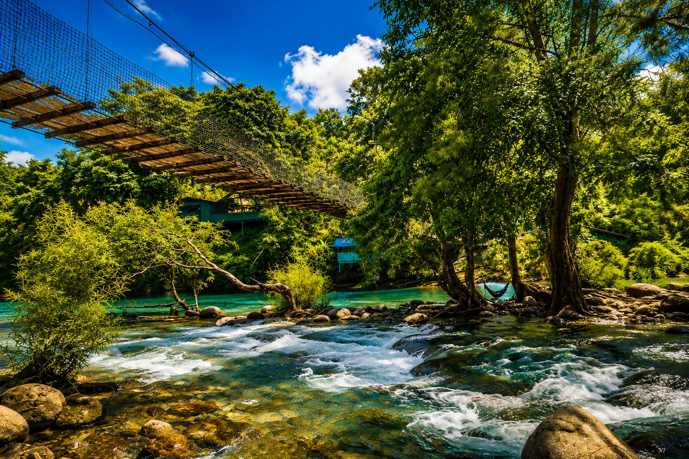
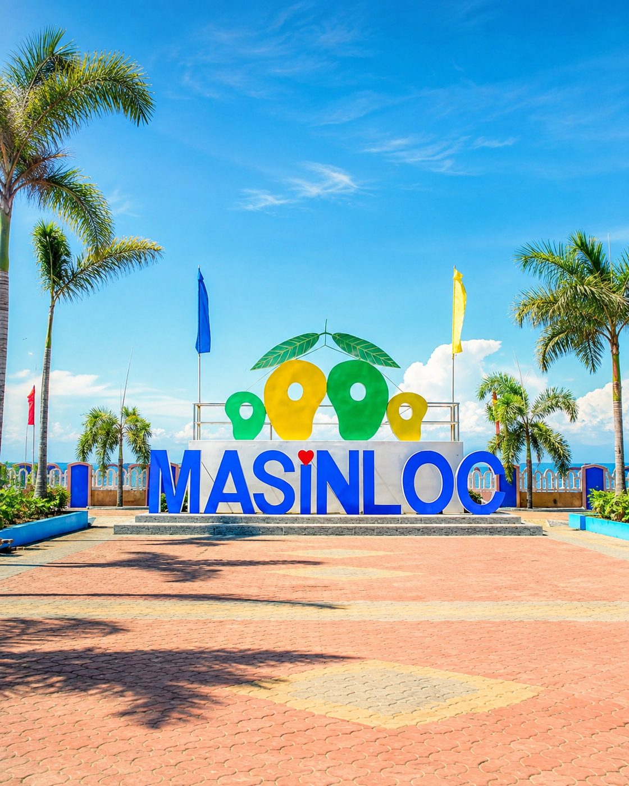
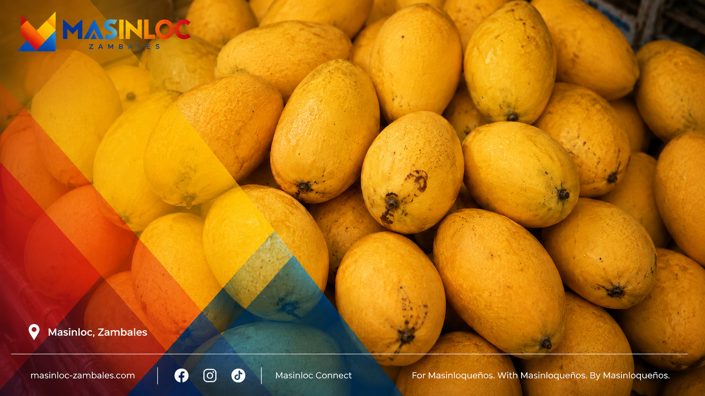
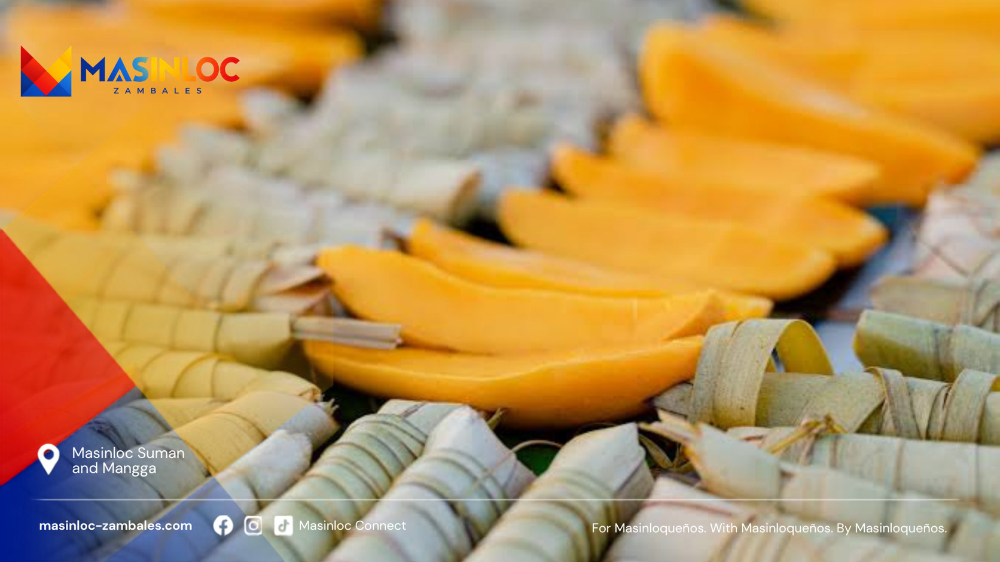
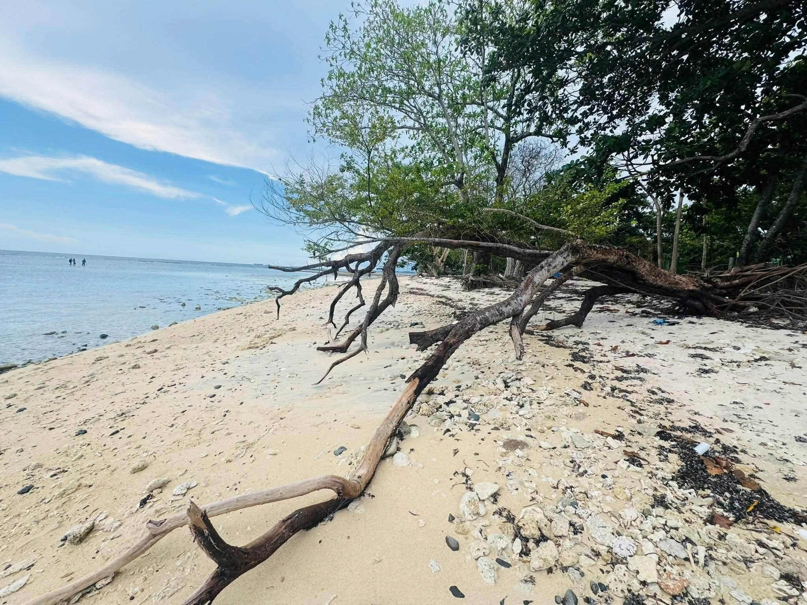

Masinloqueños to the world.
Discover Masinloc
Masinloc is more than a stop on the Zambales highway. These stories follow the town from its protected bay to its thirteen barangays, from Sambal words to disputed dates, and from food people eat here to records the rest of the world can check.
Discover tells Masinloc outward. Documented fact, oral tradition and unresolved questions are kept visibly separate so a good story never has to pretend to be a settled one.
 Start here
Masinloc Beyond the Highway
A first look at the Masinloc the highway cannot explain: 56,579 people, thirteen barangays, protected water, a 1,023-megawatt power plant and a name carried far out to sea.
Start here
Start here
Masinloc Beyond the Highway
A first look at the Masinloc the highway cannot explain: 56,579 people, thirteen barangays, protected water, a 1,023-megawatt power plant and a name carried far out to sea.
Start here
Start here
If you have five minutes and no particular question.
- Masinloc in Numbers, Right NowA dated record of Masinloc's population, barangays and elected leaders, with a source and verification date for every value that can change.
- This Is Not the LGU Website, and That Is the PointThis independent Masinloc platform cannot issue a permit or speak for government. What it can do is show its sources, hold a question open, protect submissions and publish a correction trail.
- Thirteen Barangays, One MasinlocThe 2024 census shows a municipality whose largest barangay has more than six times the population of its smallest—and whose official urban-rural labels challenge the obvious map in your head.
Places
Eight of them, photographed where they actually are.


Food and local flavors
What Masinloc grows, gathers and eats, and why a shellfish most visitors have never heard of matters more here than any restaurant list.


History and culture
Including the parts that are not settled.

- The Sambal Words Masinloc Refuses to LoseSambal is a language, not a dialect of Tagalog. Masinloc's archive holds 5,222 dictionary entries—but preservation begins only when archival forms and living speakers can answer each other.
- Masinloc, Masingloc and the Trouble With a Good Origin StoryOld records preserve spellings such as Masingloc. Modern retellings offer a river phrase or a hinloc plant. Neither explanation yet has the documentary or linguistic chain needed to settle the name.
Festivals and traditions
What the town performs, celebrates and keeps doing every year, and what those practices are actually for.
The sea
Protected water, and the argument about a shoal.

- Why Does a Distant Shoal Carry Masinloc's Name?Bajo de Masinloc lies about 124 nautical miles from the Zambales coast. Its old name links a remote reef to this town—but a name on a chart proves less, and more, than political slogans suggest.
Industry and local economy
A 1,023-megawatt power station, 2,649 recorded fishers and a documented mango industry. What the public numbers show—and what they do not.
- Three Economies Meet at Masinloc BayDENR records 2,649 fishers. The power plant reports 1,023 megawatts. Mangoes grown in Masinloc have tested at 23 percent soluble sugar. These numbers describe sectors—not a household budget.